Стандартная магнитола Короллы E120 никаких источников звука, кроме диска и радио, не предполагает. Поэтому захотелось поставить что-то более функциональное, заодно совмещающее функции навигатора и монитора заднего вида. На момент покупки на Ebay было 2-3 предложения магнитол на андроиде и несколько на Windows CE. К сожалению, устройств без совершенно ненужного уже DVD-привода не нашлось. Варианты с WinCE были отброшены сразу — система морально и физически устаревшая, по отзывам есть проблемы с многозадачностью, тормознутостью интерфейса (т.к. железо туда обычно ставят дохлое) и подключением устройств. На али выбор оказался больше, там и нашёл более-менее подходящую по цене магнитолу на Android 4.2.2.
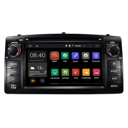
С заказом поначалу проблем не было — отправили его быстро, но на китайской таможне посылку внезапно завернули обратно к отправителю. Пишу продавцу, отвечает — «не волнуйтесь, как только посылка вернётся, отправим снова». Проходит неделя, две — отправки нет. Тем временем у продавца появляется магнитола на Андроиде 4.4, написал ему, может ли он отправить её вместо той, что завернули, тот согласился, несмотря на разницу в цене. Пока переписывались, прошёл уже месяц с момента отправки, собираюсь открывать спор, но продавец наконец прислал новый трек. В этот раз почта удивила — посылка добралась за 2 недели, так что защиту продлять на Али не пришлось.
Технические характеристики:
ОС: Android 4.4.4
Процессор: 2-х ядерный Cortex A9 на 1.6ГГц (Предположительно Rockchip 3066), графический чип Mali-400 MP
Оперативная память: 1Гб DDR 3
Экран: 6.2", 800x480
Радио: AM/FM с RDS, стерео.
Аудиоканалы: 4x50Вт.
2 видеовыхода, 2 видеовхода для камер.
Цена: $294.62 (покупал за $256.32)
Коробка с магнитолой была в ещё одной коробке, упаковано всё достаточно надёжно и дошло без повреждений. Комплект поставки:
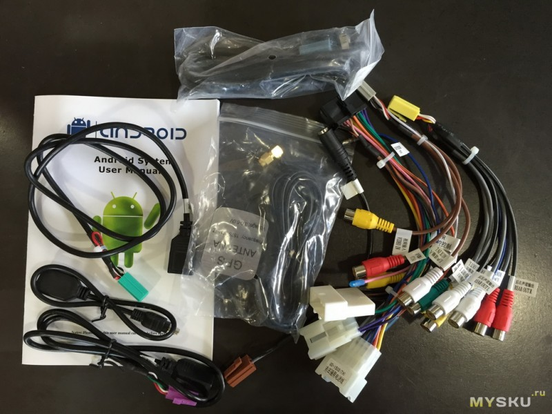
Внешний вид магнитолы:
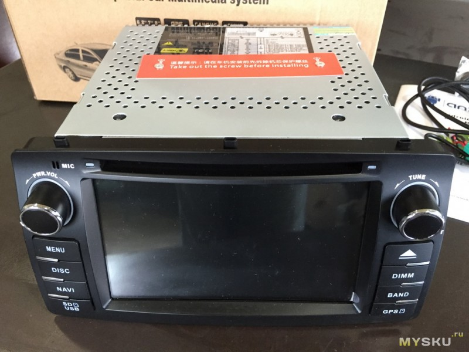
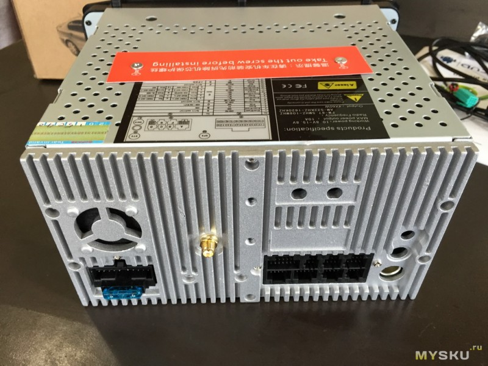
На передней панели помимо прочего есть микрофон, кнопка reset и инфракрасный приёмник. Пульта при этом в комплекте не было, и неясно какой именно пульт к ней вообще может подойти.
Краткий процесс установки и возникшие проблемы
Чтобы снять центральную панель, нужно отщелкнуть и снять панель вокруг рычага КПП, затем вытащить регулятор скорости вентилятора и выкрутить один болт
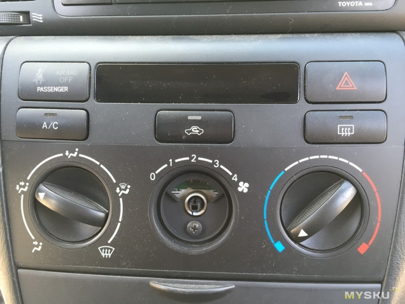
Затем потянуть панель на себя, она держится на защёлках снизу и сверху. Сама магнитола держится на четырёх болтах (5й в центре выкручивать не нужно) и снимается вместе с рамкой, в которой стоят решётки вентиляции.
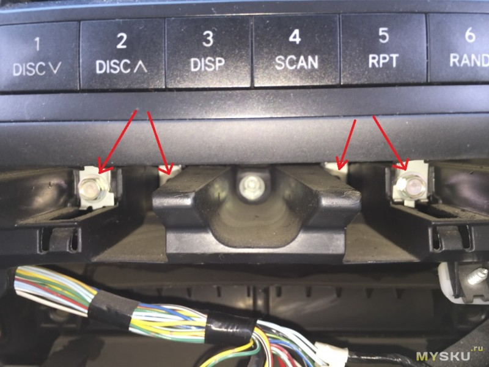
В процессе установки вскрылись 2 проблемы. Во-первых, совпали не все выступы и отверстия на магнитоле и крепёжных пластинах от старой магнитолы:
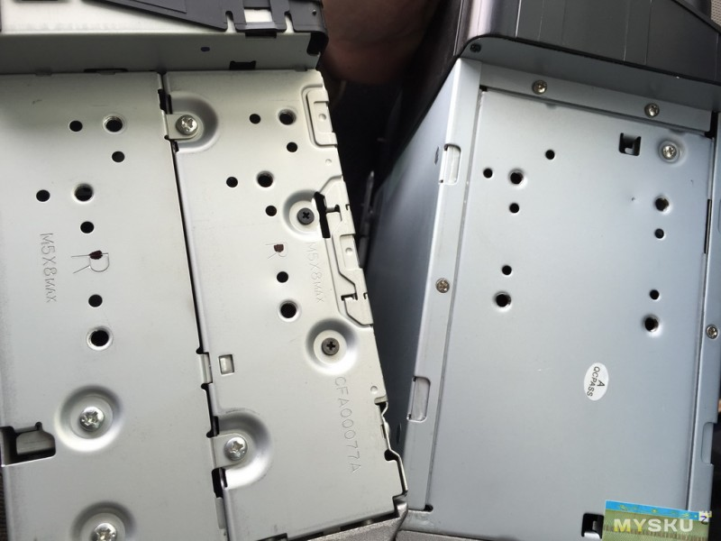
Пришлось просто высверлить эти 2 выступа на крепёжных пластинах:
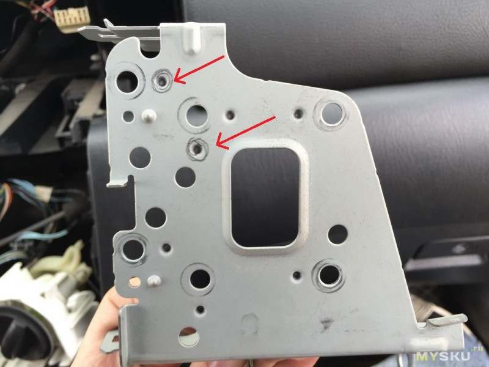
А во вторых, и это уже более существенно, радиус закругления углов оказался немного другим и магнитола не лезла в стандартную рамку. Пришлось в прямом смысле доработать углы напильником.
GPS-антенна на магнитном основании, примагнитил её прямо к верхней поверхности магнитолы, места под панелью хватило.
Работа устройства
Половина кабелей (для дополнительной акустики, дополнительного экрана, внешнего микрофона) не понадобились. Кабели для USB и 3G/WiFi вывел в «бардачок» на центральной панели, немного расширив одно из отверстий в его задней стенке.
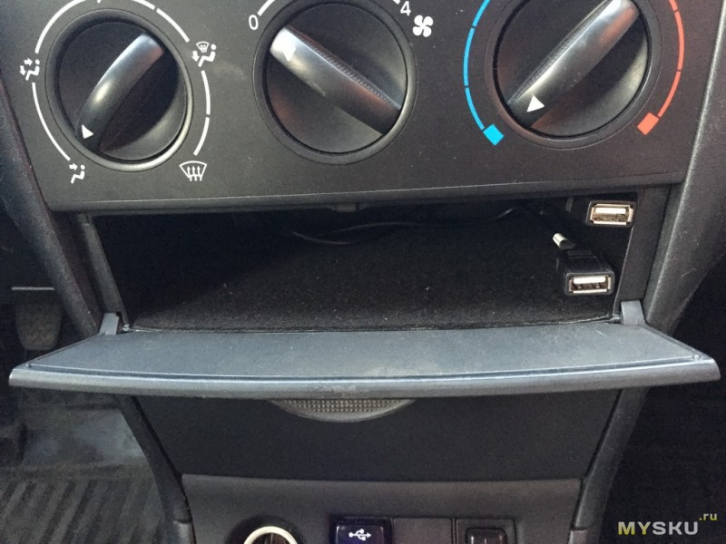
После включения открывается приложение, которое было активным в момент выключения (радио или навигационная программа, например). Оболочка (лаунчер) довольно приятная на вид и удобная. Если радио запущено и свёрнуто, слева отображается текущая станция, если нет — время и погода. Внизу слева на экране 2 иконки для переключения между «автомобильными» функциями и списком всех приложений:
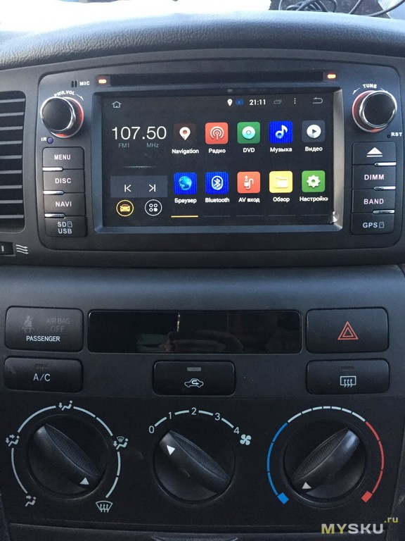
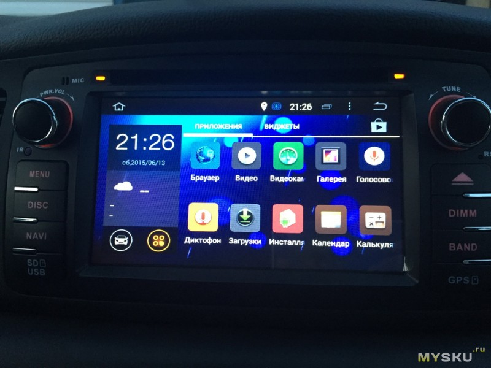
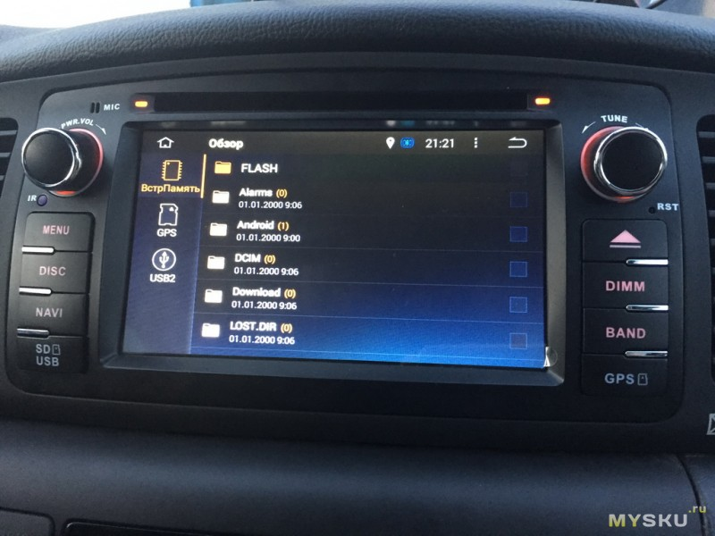
Кнопка DIMM последовательно переключает яркость экрана (6 градаций), BAND — переключает диапазоны радио, MENU — сворачивает все приложения, NAVI — запускает назначенную в настройках программу. Нижние кнопки — заглушки, за ними скрыты порты для microSD и порт miniUSB (переходник на обычный USB в комплекте есть).
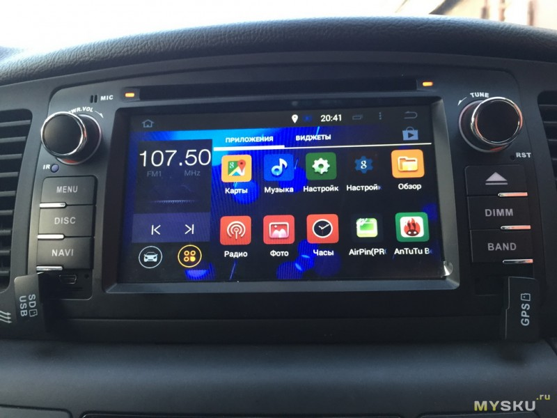
В настройки вынесены специальные «автомобильные» пункты. Там можно назначить приложение для кнопки NAVI (подразумевается навигационное приложение, но при желании можно назначить любое из установленных), настроить приглушение/отключение радио, когда навигационная программа что-нибудь говорит, назначить управление рулевыми кнопками (проверить не смог в виду их отсутствия) и настроить эквалайзер.
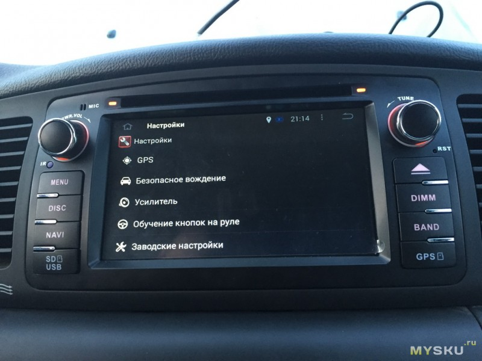
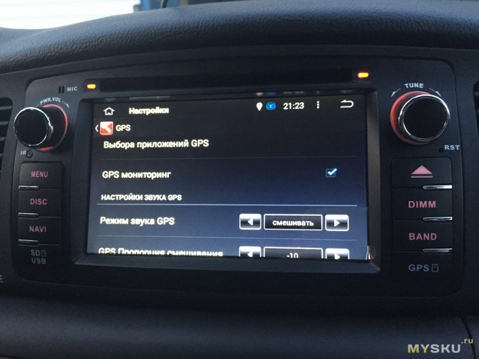
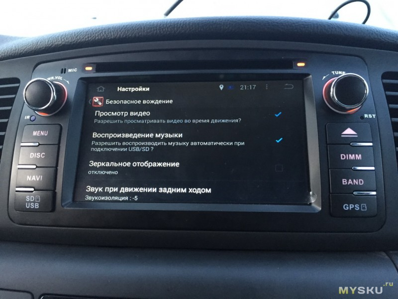
Спутники ловятся на удивление быстро, прямо таки моментально. Даже при первом включении, когда запустил навигационную программу — несколько спутников подключились сразу. В комплекте шла microSD-карточка с программой iGO и картами многих стран, в т.ч. и России. несмотря на малый вес карт, мой небольшой город там оказался достаточно подробно показан. Но на всякий случай поставил привычный Navitel. Причём после установки его в качестве навигационной программы по умолчанию папка NavitelContent частично скопировалась из внутренней памяти на карточку для GPS. Карты не скопировались, перенёс их через файловый менеджер.
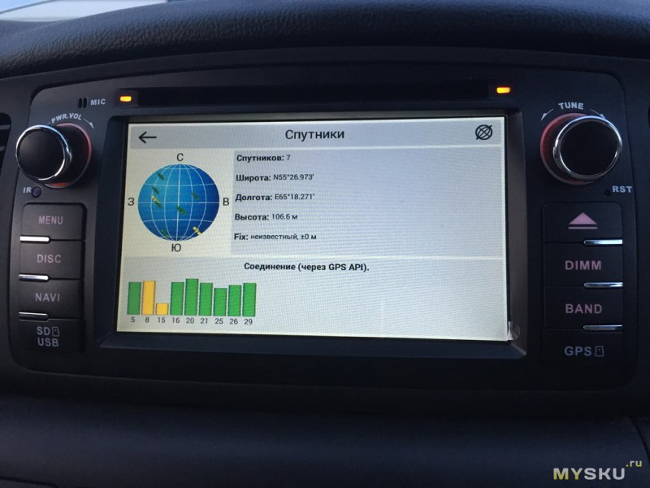
При включении задней скорости дисплей переключается на показ с камеры заднего вида, как и должно быть (даже если магнитола ещё не загрузилась). Для этого один из проводов подключен к контакту заднего хода под капотом. Ещё есть провод для подключения к тормозам, его тоже подключил, но так и не понял зачем это надо, никакого эффекта от тормозов нет. Также предусмотрено подключение ещё одной камеры в качестве видеорегистратора.
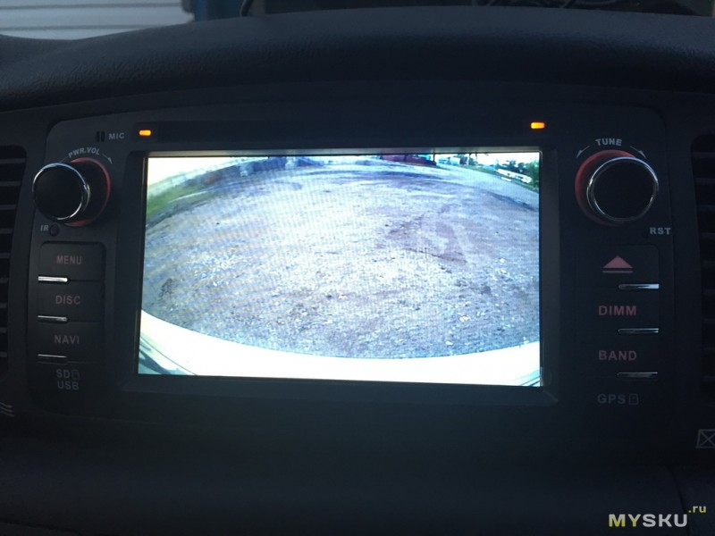
При подключении флэшки в usb автоматически включается аудиоплеер и играет музыку с неё, в настройках это можно отключить. Разницы в качестве звука в сравнении со старой магнитолой не заметил. Радио может сохранять 18 станций (3 страницы по 6):
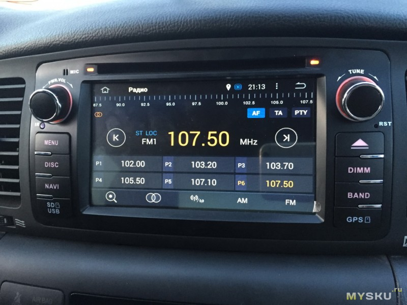
При выключении питания магнитола завершает работу, т.е. не отрубается моментально. Видимо там есть какой-то небольшой источник питания (ионистор?). Подсветка кнопок горит ещё около минуты после того как погаснет экран.
Поскольку есть bluetooth, хотел подключить купленный ранее OBD2-сканер (ELM327), для чего установил Torque Pro. Но сканер наотрез отказался работать с этой Короллой, хотя перепробовал разные настройки и строки инициализации. Сам сканер рабочий, на другой машине проверял. Да и положительные отзывы о работе с E12 в инете попадались, но видимо не судьба.
Громкая связь работает, успешно подключал и смартфон, и обычный телефон.
Поставил Antutu, чтобы узнать модель процессора и графического ускорителя, заодно протестировал
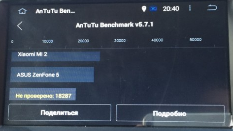
В целом, магнитолой я доволен.
Плюсы: полноценный андроид в машине, соответственно большой выбор софта; можно проигрывать музыку и видео с usb-носителей; возможность подключения интернета в машине; производительности хватает с головой.
Минусы: проблемы с установкой; долгое включение (~40 секунд) по сравнению со штатной магнитолой; отсутствие встроенного WiFi и 3G.